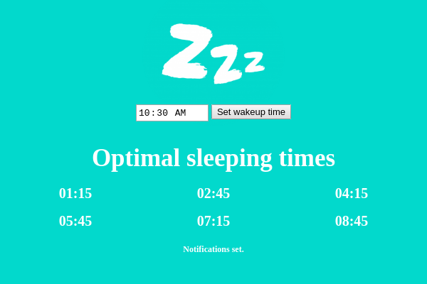

Insomnia
An application built with late night developers in mind

- Generate sleep times: determine optimal sleeping times based on wake up time.
- Notifications: a notificaton reminder to let you know it is an optimal time to shutdown your computer.
- Restart computer to maintain efficency: notifies you if your computer up times is longer than 8 hours and shows a notifcation recommending restart.
- Out of sight, out of mind: Insomnia lives in the system tray and runs in the background.
- Open source: find a bug? Make an issue.
 Mac OS
Mac OS Debian 64 Bit
Debian 64 Bit Redhat
Redhat Windows 32 Bit
Windows 32 Bit